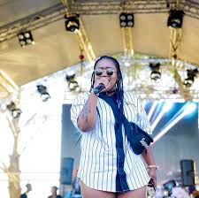

Contrary to popular belief, the Golden Bean Awards (the Beanies), birthed by Bloemfontein resident, Tebogo Kotsi, are still alive and happening. Speaking to Up-All-Night, Kotsi said that the awards were still happening annually despite the fact that they did not receive the same financial support as they had in earlier years.
“We have struggled a bit on the financial front and some of our award ceremonies had to be more discreet as marketing them was simply too expensive, but the Beanies are still here – alive and kicking,” Kotsi said. He also said that the awards, which will reach their fifth year this year, have undergone a lot of trial and error in the past years and as a result of those lessons, he has now decided to move the awards closer to the Macufe Festival date, as opposed to November, which is when they were normally held previously.
“It only makes sense to capitalise on the fact that there will be a lot of people in the province at that time,” Kotsi said. He also revealed that there would also be fewer music categories this year and more art categories inclusive of other careers and emerging fields in the Free State art industry. New categories that will be added to the awards include Best Sports Personality, Best Actor/Actress, among others. While the actual awards, which will be open to members of the public through a nomination process, will be held later this year on 19th of October, Kotsi said further details will be revealed closer to the time. On Saturday evening, however, he held a private award ceremony for those who in previous years were nominated for various awards and never received them, as well as those who have won and supported the awards over the years.
Among those who received awards were popular musician and businessman, Thabo Pitse, who won the award for being the Best Local Opera singer and multiple award-winner, Nonkosi, for being the Most Popular Vocalist. “This year, as we hold the awards again, I am anticipating that they will be held at a bigger venue and I will announce the full details in at the end of this month,” Kotsi said. Meanwhile, he urges supporters to keep an eye out for when registrations open in mid-May. The Golden Bean Awards seek to nurture and promote home-grown talent as well as award local talent in the Free State for outstanding work in music, radio, television and various other art sectors.

Local house and radio disc jockey, DJ Tshidye, has been nominated for the 2019 Golden Bean awards in the best DJ category. The diminutive powerhouse has been hard at work producing new music and touring with back to back bookings.